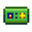

| Imagem |
Nome |
Uso |
Obtenção |
 |
Guia de pigmeu |
É usado para desbloquear a habilidade de falar com o mercador Anão nas Minas. |
Recompensa do Museu após doar todos os 4 pergaminhos dos anões. |
 |
Chave Enferrujada |
É usada para entrar nos Esgotos. |
Recebido do Gunther no dia seguinte após ter doado 60 itens ao Museu. |
|  |
Cartão do Clube |
É usado para entrar no Cassino. |
Completando a missão "O Misterioso Qi". |
 |
Amuleto Especial |
Aumenta a Sorte diária. |
Recebido do motorista do caminhão do lado de fora do Mercado Joja (ou Cinema se o Conjunto A Desaparecida foi completo) após achar o Recado Secreto #20 e dar-lhe um Pé de coelho. |
 |
Chave de Caveira |
É usada para desbloquear a porta na Caverna da Caveira e jogar o JunimoKart no Saloon Fruta Estrelar. |
Do baú no andar 120 nas minas. |
 |
Lupa |
Desbloqueia a habilidade para encontrar Recados Secretos. |
Após completar a missão "Um Mistério do Inverno". |
 |
Talismã das Trevas |
Item de missão. |
Obtido no baú do Covil dos Insetos Mutantes. |
 |
Tinta mágica |
Item de missão. |
Encontrado em uma mesa na Cabana da Bruxa. |